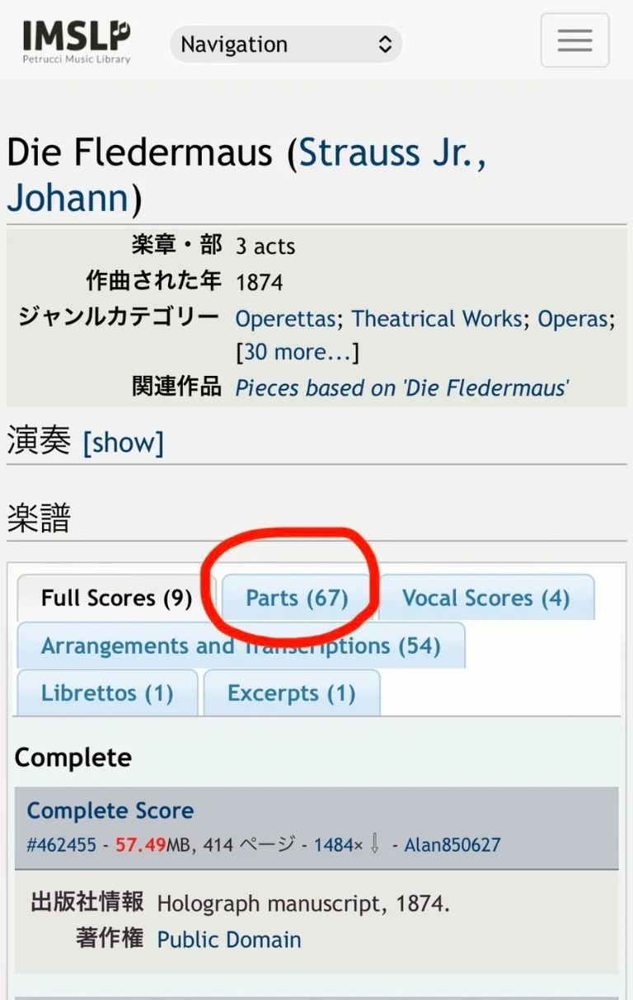
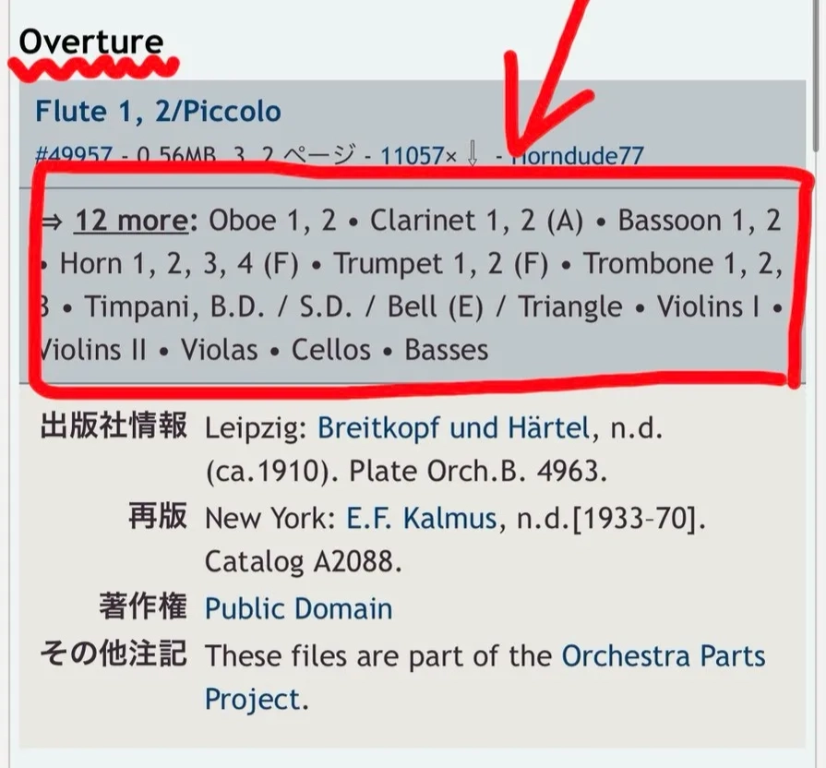
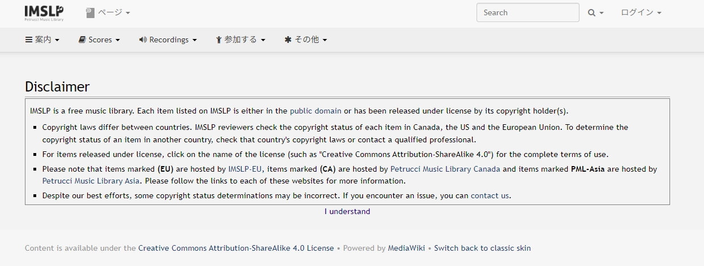
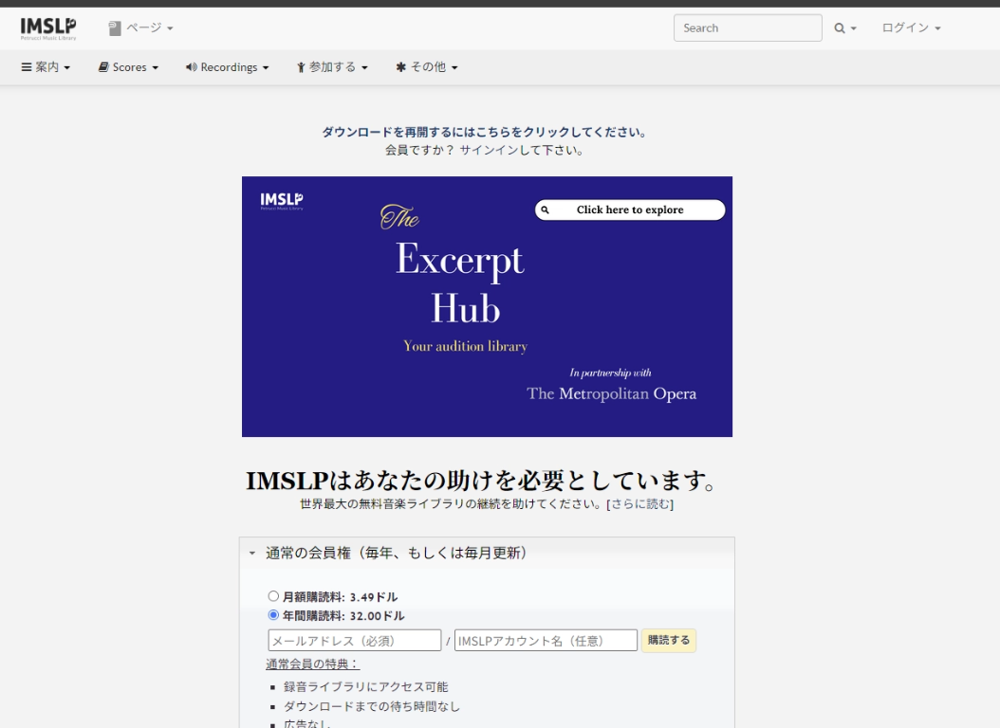

MEMBERS' INFORMATION
楽譜共有
チャイコフスキー5番
下記URLよりBreitkopf editionをダウンロードしてください。
こうもり序曲
Friends forever（内藤先生オリジナル曲）
ただいま作曲いただいております！
IMSLPからのダウンロード方法
-
IMSLPの曲のページを開き、「Parts」タブをクリックします。

-
該当する作品のセクション（例：「Overture」）にある「⇒ more」をクリックし、一覧から自分のパート名を選びます。画像は「こうもり序曲」の画面例です。

-
Disclaimerが表示されたら、「I understand」をクリックします。

-
15秒ほど待ち、「ダウンロードを再開するにはこちらをクリックしてください。」をクリックします。

- PDFが開いたら、ブラウザーのダウンロード機能で保存してください。